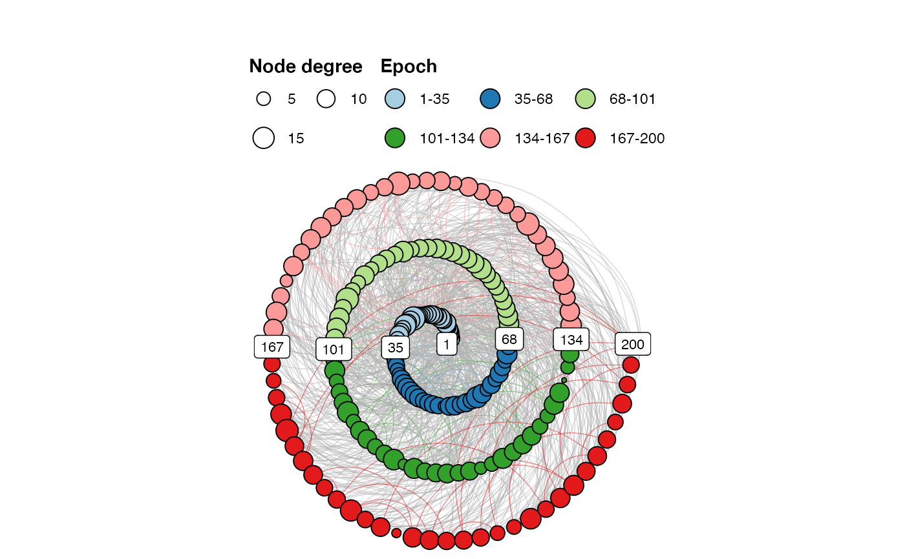

Turn an igraph object into a spiral graph returning a ggplot2 object.
make_spiral_focus(g, arcs = 6, a = 1, b = NULL, rev = FALSE, curvature = -0.6, angle = 90, markTimeBy = NULL, alphaV = 1, alphaE = 0.6, title = "", subtitle = "", showEpochLegend = TRUE, markEpochsBy = NULL, epochColours = NULL, epochLabel = "Epoch", showSizeLegend = FALSE, sizeLabel = "Size", scaleVertexSize = c(1, 6), vertexBorderColour = "black", scaleEdgeSize = 1/5, defaultEdgeColour = "grey70", doPlot = TRUE)
| g | An igraph object. If ( |
|---|---|
| arcs | The number of arcs (half circles/ovals) that make up the spiral (default = |
| a | Parameter controlling the distance between spiral arms, however, the effect will vary for different spiral types (default = |
| b | Parameter controlling where the spiral originates. A value of 1 will generally place the origin in the center. The default |
| rev | If |
| curvature | The |
| angle | The |
| markTimeBy | Include a vector that indicates time. The time will be displayed on the plot. Pass |
| title | A title for the plot |
| subtitle | A subtitle for the plot |
| showEpochLegend | Should a legend be shown for the epoch colours? (default = |
| markEpochsBy | A vector of length |
| epochColours | A vector of length |
| epochLabel | A title for the epoch legend (default = |
| showSizeLegend | Should a legend be shown for the size of the nodes? (default = |
| sizeLabel | Use to indicate if |
| scaleVertexSize | Scale the size of the vertices by setting a range for |
| vertexBorderColour | Draw a border around the vertices. Pass |
| scaleEdgeSize | Scale the size of the edges by a constant: |
| defaultEdgeColour | Colour of edges that do not connect to the same epoch (default = |
| doPlot | Produce a plot? (default = |
A ggplot object.
To keep the igraph object, use the layout function layout_as_spiral(g) when plotting the graph.
library(igraph) g <- sample_gnp(200, 1/20) V(g)$size <- degree(g) make_spiral_graph(g, markTimeBy = TRUE, showSizeLegend = TRUE, sizeLabel = "Node degree")